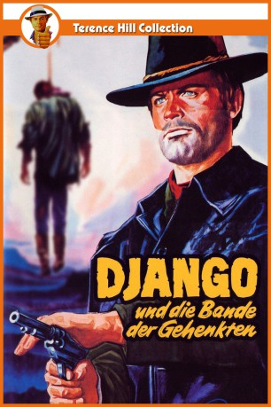

#4389 Django - Sein Haß ist tödlich
Alternativ: Django, Prepare a Coffin (Englischer Titel)
 
 IMDB-Wertung: 6.5 / 10
IMDB-Wertung: 6.5 / 10  Metascore: 0
Metascore: 0 
Der einzige Überlebende eines Überfalls auf einen Geldtransport glaubt, als Drahtzieher einen alten Bekannten ausmachen zu können, der nun Gouverneur werden will. Nachdem er sich von seinen Verletzungen erholt hat, zieht er als Friedensrichter und Henker getarnt umher, um zum Tode Verurteilte mittels einer speziellen Vorrichtung heimlich zu retten. Aus ihnen stellt er eine Bande zusammen, mit der er schließlich den Kampf gegen den Politiker und seine Schergen aufnimmt.
Jahr: 1968
Dauer: 92 Minuten
FSK: 12
Land: Italien Studio: Constantin FilmTonspuren:
Untertitel:
Auflösung: 1080p (1920x1080) Größe: 7147 MB
Genre: Action, Western
Regisseur: Ferdinando Baldi
Drehbuch: Michael Konyves
Soundtrack:
Darsteller:
Datei: X:\HD-Western-Collections\Django\Django - Sein Haß ist tödlich (1968, FSK12, 1920x1080).mkv seit 13.09.2016
Festplatte: HD Eastern+Western
 Es gibt insgesamt 10 Filme in der Gruppe 'HD-Western-Collections\Django'
Es gibt insgesamt 10 Filme in der Gruppe 'HD-Western-Collections\Django'